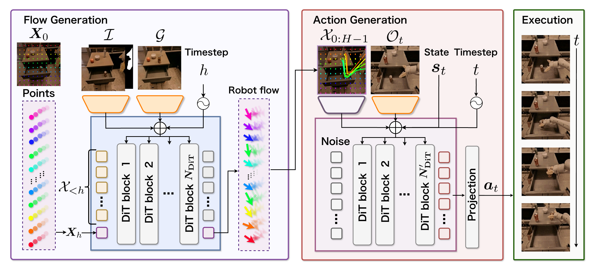
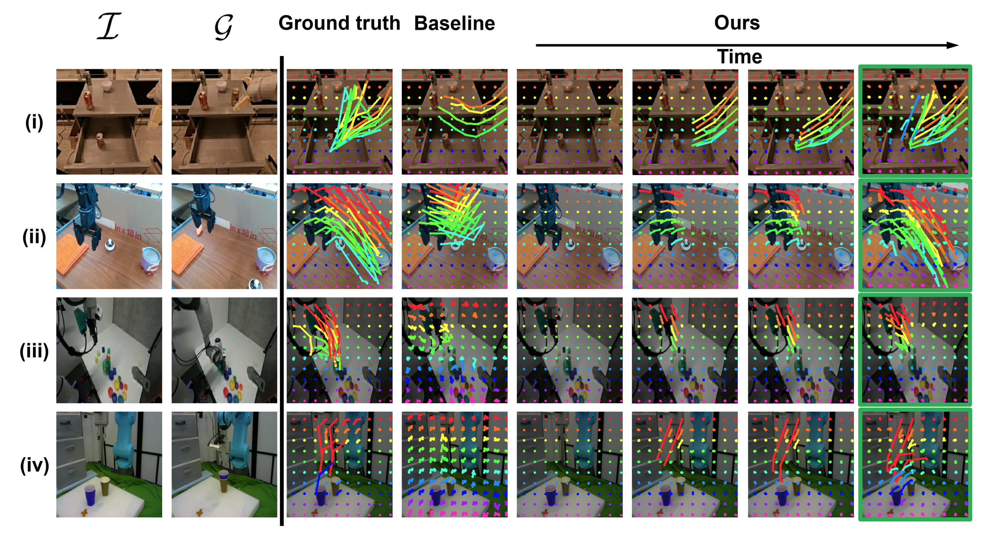
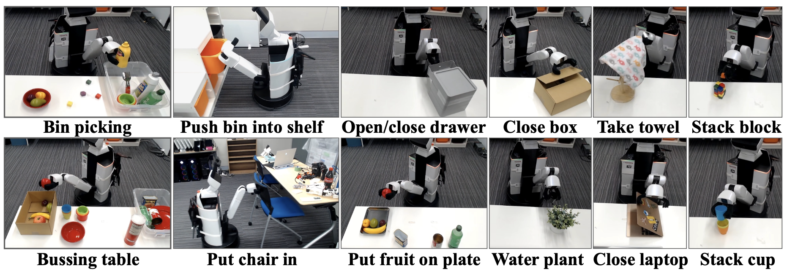

Under Review
Cross-embodiment data have become central to training robotic foundation models. To leverage such heterogeneous data, we focus on flow-based object manipulation, where robot flows (robot velocity fields) serve as embodiment-agnostic motion representations. Prior work often formulates robot flows by differencing predicted keypoints across frames, which requires a strong visibility assumption and thus yields rough approximations of their underlying velocity fields. To address this limitation, we propose Flow as Flow, a framework that models robot flows as probability flows based on a flow matching formulation. By naturally modeling such velocity fields within this formulation, our method achieves efficient and high-quality robot flow generation. Across standard benchmarks, our method outperforms representative baseline methods on standard metrics, while achieving approximately 33× faster generation. Furthermore, through real-world experiments evaluating 9 methods with 260 trials per method across 13 manipulation tasks, we show that our method achieves a higher average success rate than the baseline methods.
🚀 ~33× faster generation than the best baseline method (44 ms vs. 1,430 ms per sample).
📊 Achieves the best ADE scores across four standard benchmarks (Fractal, Bridge V2, DROID-100, Fanuc Manipulation), including zero-shot settings.
🤖 Achieves the highest average success rate across 13 real-world mobile manipulation tasks, outperforming the strongest baseline (Track2Act) by 10 points.
🔌 Architecture-agnostic: Flow as Flow can be directly integrated into other flow-based methods without any structural changes.
Our method is evaluated on 13 mobile manipulation tasks using the Human Support Robot (HSR). Click a video to enlarge.
We propose Flow as Flow, a framework that models physical robot velocity fields as probability velocity fields, achieving efficient and high-quality generation of robot flows.
The core novelty of our framework is modeling physical robot velocity fields as probability velocity fields in the generation space of flow matching. We initialize \(N\) (e.g., \(10\times 10\)) points uniformly on the image and obtain their future positions by integrating the velocity fields predicted by a flow generation model \(\boldsymbol{v}_\theta\).
We construct target velocity fields in a stabilizing feedback form: \[ \boldsymbol{v}(\boldsymbol{\Xi}_h, \boldsymbol{X}, h) = \dot{\boldsymbol{\Xi}}_h - k(\boldsymbol{X} - \boldsymbol{\Xi}_h), \] where \(\boldsymbol{X} \sim \mathcal{N}(\boldsymbol{\Xi}_h,\, \sigma_0^2 e^{-2kh}\boldsymbol{I})\). The stabilization term enhances robustness to out-of-distribution samples.
We train \(\boldsymbol{v}_\theta\) with the conditional flow matching (CFM) loss: \[ \mathcal{L}_{\text{CFM}} = \mathbb{E}_{\boldsymbol{\Xi}_h, h, \boldsymbol{X}} \left[\left\lVert \boldsymbol{v}_\theta\!\left(\boldsymbol{X}, h \mid \mathcal{I}, \mathcal{G}, \boldsymbol{\Xi}_{0:h-1}\right) - \boldsymbol{v}\!\left(\boldsymbol{\Xi}_h, \boldsymbol{X}, h\right) \right\rVert^2\right]. \] At inference, coordinates at step \(h\) are obtained by integrating \(\boldsymbol{v}_\theta\) autoregressively, enabling fast generation with only a single ODE solve per step.

Model architecture of Flow as Flow. The framework consists of the Flow Generation Module (using DiT conditioned on initial and goal images) and the Action Generation Module (using DiT-based Diffusion Policy conditioned on generated robot flows).
Our framework consists of two main modules: the Flow Generation Module and the Action Generation Module.
Implements \(\boldsymbol{v}_\theta\) based on the Diffusion Transformer (DiT). Each DiT block is modulated via adaLN-Zero using a shared conditioning vector constructed from \(\mathcal{I}\), \(\mathcal{G}\), and sampling step \(h\). The initial and goal images are encoded via ResNet-18, and the conditioning vector is obtained by summing embeddings.
Predicts end-effector poses conditioned on the generated robot flows. Implemented based on Diffusion Policy with a DiT backbone, trained with a flow matching objective.
We compared our method against baseline methods on the test sets of Fractal, Bridge V2, DROID-100, and Fanuc Manipulation. In-domain settings corresponded to Fractal and Bridge V2; zero-shot settings corresponded to DROID-100 and Fanuc Manipulation.
| Method | Flow as Flow | In-domain | Zero-shot | Inf. speed ↓ [ms] |
||||||||||
|---|---|---|---|---|---|---|---|---|---|---|---|---|---|---|
| Fractal | Bridge V2 | DROID-100 | Fanuc Manip. | |||||||||||
| ADE ↓ | FDE ↓ | LTDR ↑[%] | ADE ↓ | FDE ↓ | LTDR ↑[%] | ADE ↓ | FDE ↓ | LTDR ↑[%] | ADE ↓ | FDE ↓ | LTDR ↑[%] | |||
| Language-conditioned | ||||||||||||||
| FLIP | 66.17 | 87.52 | 35.69 | 50.73 | 68.43 | 47.72 | 43.10 | 49.10 | 54.87 | 28.31 | 50.83 | 72.17 | 35 | |
| FLIP w/ Flow as Flow | ✓ | 38.77 | 57.41 | 58.11 | 48.34 | 66.31 | 49.26 | 38.54 | 44.48 | 56.25 | 26.79 | 47.85 | 71.62 | 17 |
| Im2Flow2Act | 37.14 | 47.74 | 60.61 | 51.48 | 70.93 | 47.97 | 44.14 | 54.41 | 51.48 | 38.15 | 64.18 | 59.25 | 5,580 | |
| Im2Flow2Act w/ Flow as Flow | ✓ | 33.21 | 46.83 | 64.25 | 42.96 | 60.93 | 54.00 | 38.87 | 45.25 | 56.07 | 26.51 | 48.48 | 71.75 | 230 |
| GigaWorld-0-Video | — | 74.00 | 95.23 | 32.46 | 53.18 | 69.58 | 46.44 | 42.75 | 47.96 | 53.91 | 37.60 | 58.35 | 61.22 | 26,976 |
| Goal-conditioned | ||||||||||||||
| Track2Act | 64.32 | 86.62 | 42.00 | 47.29 | 64.13 | 51.61 | 40.73 | 47.43 | 54.29 | 27.37 | 47.17 | 70.99 | 1,430 | |
| Ours | ✓ | 21.23 | 27.31 | 76.79 | 27.11 | 34.66 | 69.96 | 35.89 | 40.58 | 58.81 | 22.46 | 42.19 | 74.54 | 44 |
Quantitative comparison on robot flow generation benchmarks. Bold indicates the best result and underline indicates the second best. Green rows indicate methods using Flow as Flow (ours = dark green, variants = light green).
Comparison of robot flow generation between our method and Track2Act on samples from Fractal (i), Bridge V2 (ii), DROID-100 (iii), and Fanuc Manipulation (iv). The left two columns show \(\mathcal{I}\) and \(\mathcal{G}\); the remaining columns show the ground truth, Track2Act, and our method's flows overlaid on \(\mathcal{I}\).

Qualitative results of robot flow generation. Our method generated flows targeting the correct object with the appropriate motion direction, both in in-domain and zero-shot settings.
We validated our method in downstream mobile manipulation tasks using the Human Support Robot (HSR), an 11-DoF mobile manipulator. We evaluated on 13 manipulation tasks, each with ~30 teleoperated demonstrations for training and 20 trials for evaluation (260 trials per method).

Representative examples of mobile manipulation tasks. 13 diverse tasks: bin picking, bussing table, push bin into shelf, push chair, open/close drawer, put fruit on plate, close box, water plant, take towel, close laptop, stack block, and stack cup.
| [%] Method | Flow- based |
Flow as Flow |
Push bin into shelf |
Push chair |
Close drawer |
Close box |
Take towel |
Bin picking |
Put fruit on plate |
Bussing table |
Close laptop |
Water plant |
Open drawer |
Stack cup |
Stack block |
Avg. |
|---|---|---|---|---|---|---|---|---|---|---|---|---|---|---|---|---|
| Language-conditioned | ||||||||||||||||
| DP-Lang | 75 | 75 | 65 | 65 | 35 | 35 | 35 | 35 | 35 | 5 | 20 | 5 | 10 | 38 | ||
| FLIP | ✓ | 45 | 55 | 50 | 60 | 50 | 25 | 15 | 15 | 25 | 5 | 10 | 10 | 5 | 28 | |
| FLIP w/ Flow as Flow | ✓ | ✓ | 55 | 55 | 70 | 65 | 55 | 45 | 60 | 45 | 40 | 25 | 25 | 10 | 10 | 43 |
| Im2Flow2Act | ✓ | 70 | 70 | 65 | 65 | 60 | 45 | 50 | 40 | 45 | 20 | 20 | 15 | 20 | 45 | |
| Im2Flow2Act w/ Flow as Flow | ✓ | ✓ | 85 | 80 | 85 | 75 | 70 | 60 | 60 | 55 | 55 | 25 | 25 | 20 | 15 | 55 |
| Goal-conditioned | ||||||||||||||||
| DP-Goal | 40 | 30 | 45 | 50 | 25 | 30 | 5 | 15 | 30 | 5 | 5 | 0 | 5 | 22 | ||
| Track2Act | ✓ | 85 | 80 | 75 | 60 | 65 | 55 | 55 | 55 | 35 | 15 | 15 | 20 | 10 | 48 | |
| Ours | ✓ | ✓ | 90 | 90 | 80 | 75 | 75 | 70 | 65 | 65 | 50 | 30 | 30 | 20 | 15 | 58 |
| Oracle | ✓ | — | 95 | 90 | 90 | 85 | 80 | 80 | 75 | 70 | 55 | 40 | 35 | 25 | 20 | 65 |
Quantitative results of real-world experiments (260 trials per method, 20 per task). Bold = best, underline = second best. Our method achieved 58% average success rate, outperforming Track2Act (48%) by 10 points.
To be announced.